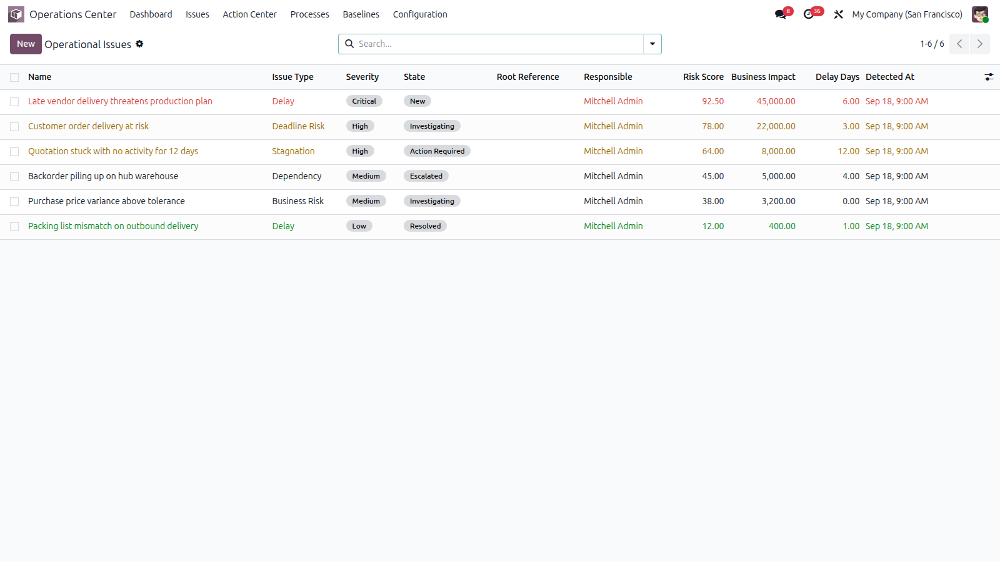
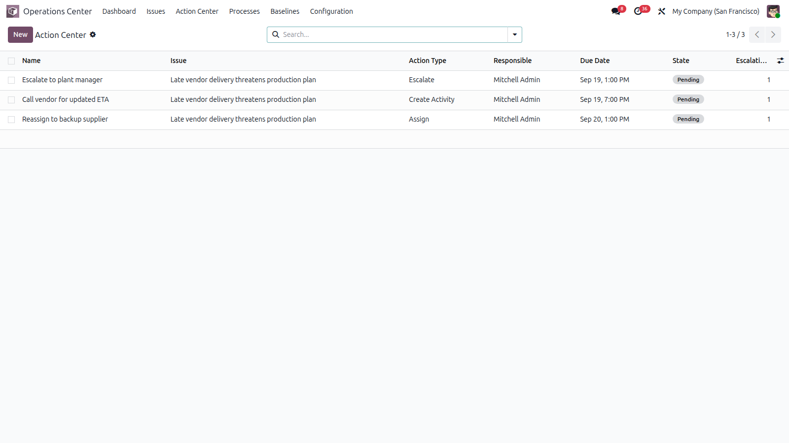
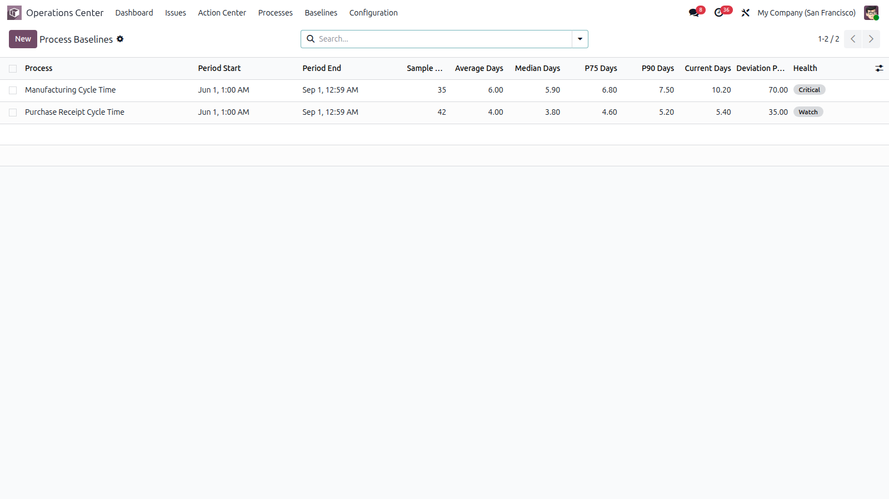
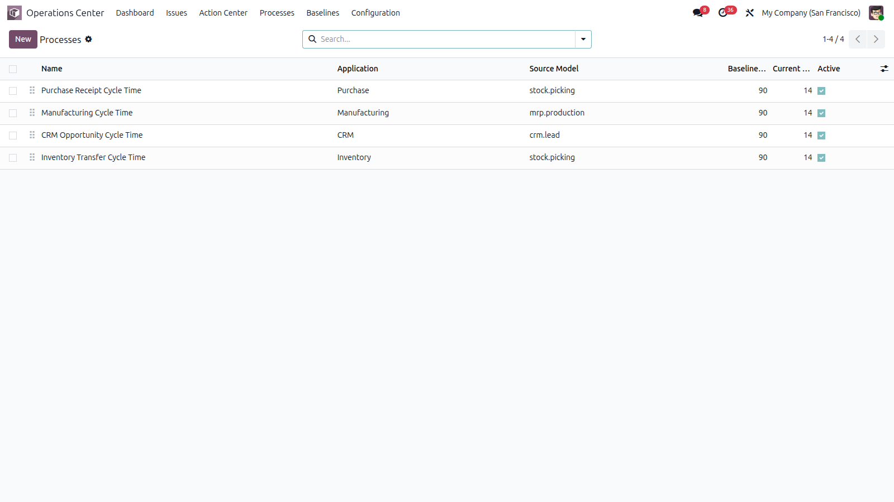
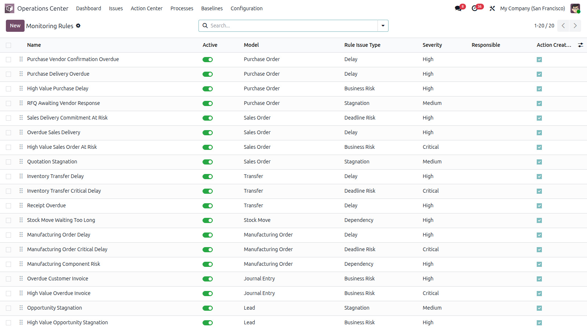

🎯 RISK & IMPACT INTELLIGENCE · ODOO
Smart Operations Center
Business process health, operational risk, impact analysis and action management — inside Odoo.
📊 Live Dashboard ⚠️ Risk Scoring 🌐 3 Languages ✅ Odoo Ready
Operations dashboard — 8 KPIs, severity bars, status donut, exposure analysis and 7-day trend, with live data
One Module — Every Operational Risk
Smart Operations Center is an intelligence layer above your Odoo operations. It continuously detects delays, stagnation and deadline risks, scores them, explains their business impact, and turns them into assigned, escalated and resolved actions.
🛒
Purchase
📦
Inventory
🏭
Manufacturing
💰
Accounting
📞
CRM & Sales
🔗
Cross-Application
FEATURE 01
Operational Issues with Risk Score
Every detected problem becomes a tracked issue with type, severity, risk score, business impact and delay — owned, investigated and resolved inside Odoo.
- ✓ Delay, stagnation, deadline risk, dependency and business risk types
- ✓ Low to Critical severity with color coding and risk scoring
- ✓ Investigate → Action Required → Escalate → Resolve workflow
- ✓ Business impact in money, customers, orders and quantities
- ✓ Snooze, ignore, root-cause links and full chatter history

Operational issues — severity badges, risk scores, business impact and delay days
FEATURE 02
Command Center Dashboard
Supervisors and managers see the whole operational picture in one place — and click through to the underlying records.
- ✓ 8 live KPIs: open, critical, escalated, overdue actions, average risk, snoozed, resolved, exposure
- ✓ Severity bars, status donut and monetary exposure by issue type
- ✓ Detection vs resolution trend over the last 7 days
- ✓ Top risks and overdue actions tables, process health tracking
- ✓ Everything clickable through to issues, actions and baselines
Command center — KPIs, graphs, watch lists and baseline deviations
FEATURE 03
Action Center with Escalation
No action gets lost: assign, track, escalate automatically on delays, and close the loop with completion proof.
- ✓ Assign, email, escalate, resolve and snooze action types
- ✓ Automatic escalation policies (first and second level with delays)
- ✓ Pending / Done / Cancelled states with due dates and activities
- ✓ Overdue actions highlighted on the dashboard
- ✓ Completion timestamps for audit trail

Action Center — assignments, due dates, escalation levels and states
FEATURE 04
Process Health vs Historical Baselines
Compare current cycle times against statistically computed baselines (average, median, P75, P90) instead of static thresholds — and catch degradation early.
- ✓ Per-process measurement windows with minimum samples guard
- ✓ Automatic deviation % and Healthy / Watch / Critical status
- ✓ Preloaded processes: purchase, manufacturing, CRM, inventory cycles
- ✓ Baseline deviation tracked directly on the dashboard
- ✓ Configurable source models and datetime fields

Baselines — average, P90, current cycle time, deviation and health status
FEATURE 05
Processes & Monitoring Rules
Declare what to watch and how: monitoring rules scan any Odoo model on a schedule and raise scored issues automatically.
- ✓ 20 preloaded monitoring rules ready to activate
- ✓ Domain-based detection with date tokens (today, today-Nd, now-NNh)
- ✓ Severity, risk weight and responsible per rule
- ✓ Automatic activities and optional emails on detection
- ✓ Domain validated live against the target model

Monitored processes — purchase, manufacturing, CRM and inventory cycles
Everything Included
🖥 Detection Engine
- Scheduled detection crons
- Safe domain evaluation
- Risk scoring engine
- Business impact engine
- 20 preloaded rules
- 4 preloaded processes
🔁 Action Workflow
- Investigate / resolve wizards
- Two-level escalation policies
- Snooze with auto-reactivation
- Chatter and activities everywhere
- Printable analysis views
- Graph and pivot reporting
⚙ Backend & Security
- User / Manager / Admin roles
- Company-aware record rules
- Multi-company support
- Post-install setup hook
- Demo-ready data included
- No external services
More Screenshots

Monitoring rules — domains, severity, risk weights and escalation policies
🌐 Available in 3 Languages
The module interface is fully translated.
🇬🇧 English 🇫🇷 Français 🇪🇸 Español
Technical Specifications
Odoo Version
19.0 (Community & Enterprise)
Module Type
Standalone operational application
Dependencies
base, mail
External Services
None required
Frontend Tech
OWL components, CSS, QWeb reports
Backend Tech
Python 3 · Odoo ORM
License
OPL-1
Demo Data
Processes and rules preloaded
Up and Running in 4 Steps
1. Install the moduleCopy to your addons folder and install from Settings → Apps.
2. Review processes & rulesActivate the 20 preloaded monitoring rules for your scope.
3. Let detection runScheduled crons raise scored issues automatically.
4. Act & resolveInvestigate, assign, escalate and resolve from the dashboard.
Professional Support Included
By Farid SLIMANI · imazighenapps@gmail.com
📧 Fast responseDirect help from the author at imazighenapps@gmail.com.
🔄 Free UpdatesOngoing improvements and Odoo compatibility fixes.
📖 User ManualDetection, workflow and dashboard documented.
🎭 Demo DataProcesses and rules ready to test live.
Turn operational data into action
Smart Operations Center detects risk, explains impact, and drives every issue to resolution inside Odoo.